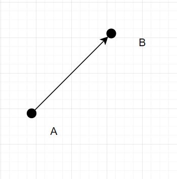
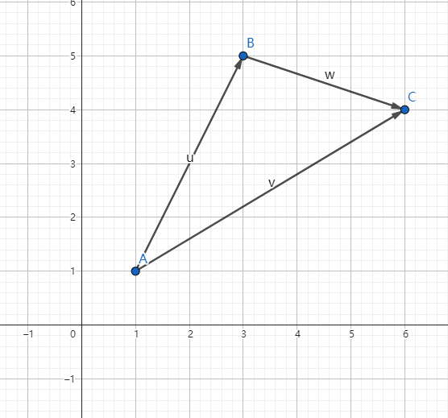
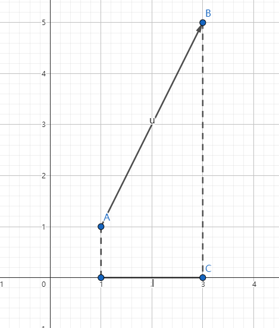
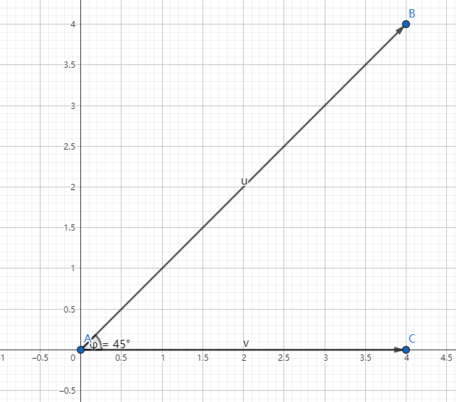
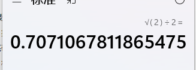
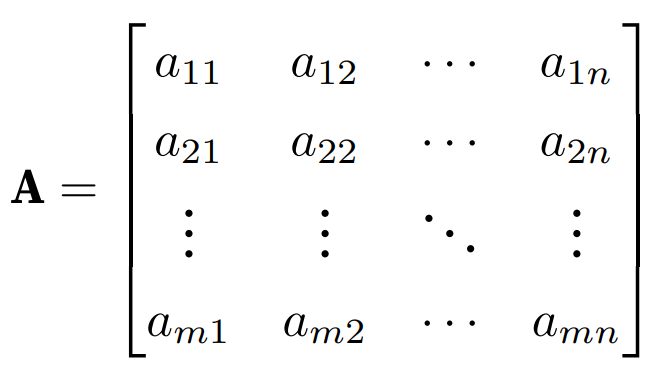
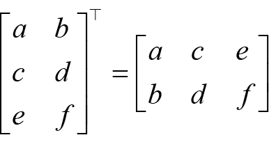

线性代数
推荐书籍
大家都知道学习 Pytorch 或 AI 需要一定的数学基础，当然也不需要太高，只需要掌握一些基础知识和求解方法，常见需要的数学基础有线性代数、微积分、概率论等，由于高等数学课程里面同时包含了线性代数和微积分的知识，因此读者只需要学习高等数学、概率论两门课程即可。数学不用看得太深，这样太花时间了，能理解意思就行。
首先推荐以下两本书，无论是否已经忘记了初高中数学知识，对于数学基础薄弱的读者来说，都可以看。
《普林斯顿微积分读本》
《普林斯顿概率论读本》
国内的书主要是一些教材，学习难度会大一些，不过完整看完可以提升数学水平，例如同济大学出版的《高等数学》上下册、《概率论与数理统计》，不过国内的这些教材主要为了刷题解题、考研考试，可能不太适合读者，而且学习起来的时间也太长了。
接着是推荐《深度学习中的数学》，作者是涌井良幸和涌井贞美，对于入门的读者来说上手难度也大一些，不那么容易看得进去，读者可以在看完本文之后再去阅读这本经典书，相信会更加容易读懂。
另外，千万不要用微信读书这些工具看数学书，排版乱七八糟的，数学公式是各种抠图，数学符号也是用图片拼凑的，再比如公式里面中文英文符号都不分。
建议直接买实体书，容易深度思考，数学要多答题解题才行。就算买来吃灰，放在书架也可以装逼呀。买吧。
本文虽然不要求读者数学基础，但是还是需要知道一些数学符号的，例如求和∑ 、集合交并∩∪等，这些在本文中不会再赘述，读者不理解的时候需要自行搜索资料。
基础知识
标量、向量、矩阵
笔者只能给出大体的概念，至于数学上的具体定义，这里就不展开了。
标量(scalar)：只有大小没有方向的数值，例如体重、身高。
向量(vector)：既有大小也有方向的数值，可以用行或列来表示。
矩阵(matrix)：由多行多列的向量组成。
张量(Tensor)：在 Pytorch 中，torch.Tensor 类型数据结构就是张量，结构跟数组或矩阵相似。
- Tensor：是PyTorch中的基本数据类型，可以理解为多维数组。 Tensor可以用来表示数据集、模型参数和模型输出等。
- Scalar：是一个特殊类型的Tensor，只有一维。 Scalar用来表示标量值，如学习率、损失值等。
- Vector：是一个特殊类型的Tensor，有一维或两维。 Vector用来表示向量值，如梯度、特征值等。
- Matrix：是一个特殊类型的Tensor，有两维。 Matrix用来表示矩阵值，如权重矩阵、输出矩阵等。
比如说 1.0、2 这些都是标量，在各种编程语言中都以基础数据类型提供了支持，例如 C# 的基元类型。
下面将标量转换为 torch.Tensor 类型。
var x = torch.tensor(1.0);
var y = torch.tensor(2);
x.print_csharp();
y.print_csharp();
[], type = Float64, device = cpu, value = 1
[], type = Int32, device = cpu, value = 2
将数组转换为 torch.Tensor 类型：
var data = new int[ , ]{ {1, 2}, { 3, 4}};
var x_data = torch.tensor(data);
x_data.print_csharp();
由于上一章已经讲解了很多数组的创建方式，因此这里不再赘述。
Pytorch 的一些数学函数
Pytorch 通过 torch.Tensor 表示各种数据类型，torch.Tensor 提供超过 100 多种的张量操作，例如算术运算、线性代数、矩阵操作、采样等。
由于篇幅有限，这里就不单独给出，读者请自行参考以下资料：
https://pytorch.org/docs/stable/torch.html
https://pytorch.ac.cn/docs/stable/torch.html
线性代数
向量
向量的概念
在研究力学、物理学等工程应用领域中会碰到两类的量，一类完全由数值的大小决定，例如温度、时间、面积、体积、密度、质量等，称为数量或标量，另一类的量，只知道数值的大小还不能完全确定所描述量，例如加速度、速度等，这些量除了大小还有方向，称为向量。
在空间中以 A 为起点 、B 为终点的线段被称为被称为有向线段，其既有大小也有方向，使用 $\overrightarrow{AB} $ 表示，如果不强调方向，也可以使用 $\alpha $ 等进行简记。

A、B 之间的距离称为向量的模，使用 | $\overrightarrow{AB} $ | 或 | $\overrightarrow{BA} $ | 或 | $\alpha $ | 表示。
平面中的向量，其距离公式是：
$$ | \overrightarrow{AB} | = \sqrt{(x{2}-x{1})^{2} + (y{2}-y{1})^2}
$$ 其实原理也很简单，根据勾股定理，AB 的平方等于两个直角边长平方之和，所以：
$$ | \overrightarrow{AB} | ^2 = (x{2}-x{1})^{2} + (y{2}-y{1})^2
$$

去平方就是：
$$ | \overrightarrow{AB} | = \sqrt{(x{2}-x{1})^{2} + (y{2}-y{1})^2}
$$
如下图所示，其两点间的距离：
$$ | \overrightarrow{AB} | = \sqrt{(4-1)^{2} + (4-1)^2} = \sqrt{18} = 3\sqrt{2} = 4.242640687119285
$$

使用 C# 计算向量的模，结果如下
var A = torch.from_array(new[] { 1.0, 1.0 });
var B = torch.from_array(new[] { 4.0, 4.0 });
var a = B - A;
var norm = torch.norm(a);
norm.print_csharp();
[], type = Float64, device = cpu, value = 4.2426
注意，计算向量的模只能使用浮点型数据，不能使用 int、long 这些整型。
同理，对于空间中的两点 $A(x{1},y{1},z{1})$、$B(x{2},y{2},z{2})$ ，距离公式是：
$$ | \overrightarrow{AB} | = \sqrt{(x{2}-x{1})^{2} + (y{2}-y{1})^2 + (z{2}-z{1})^2}
$$
向量的加减乘除法
向量的加法很简单，坐标相加即可。
如图所示，A(1,1)、B(3,5)、C(6,4)。
$\overrightarrow{AB} (2,4) $、$\overrightarrow{BC} (3,-1) $、$\overrightarrow{AC} (5,3) $
根据数学上向量的加法可知，$\overrightarrow{AB} $ + $\overrightarrow{BC} $ = $\overrightarrow{AC} $
var B = torch.from_array(new[] { 2.0, 4.0 });
var A = torch.from_array(new[] { 3.0, -1.0 });
var a = A + B;
a.print_csharp();
[2], type = Float64, device = cpu, value = double [] {5, 3}

同理，在 Pytorch 中，向量减法也是两个 torch.Tensor 类型相减即可。
推广到三维空间，计算方法也是一样的。
var B = torch.from_array(new[] { 2.0, 3.0, 4.0 });
var A = torch.from_array(new[] { 3.0, 4.0, 5.0 });
var a = B - A;
a.print_csharp();
[3], type = Float64, device = cpu, value = double [] {-1, -1, -1}
另外，向量乘以或除以一个标量，直接运算即可，如 $ \overrightarrow{AB} (2,4) $，则 3 * $ \overrightarrow{AB} (2,4) $ = (6,12)。
向量的投影
如图所示， $\overrightarrow{AB} (2,4) $ 是平面上的向量，如果我们要计算向量在 x、y 上的投影是很简单的，例如在 x 轴上的投影是 2，因为 A 点的 x 坐标是 1，B 点的 x 坐标是 3，所以 3 - 1 = 2 为 $\overrightarrow{AB} (2,4) $ 在 x 轴上的投影，5 - 1 = 4 是在 y 轴上的投影。

在数学上使用 $Projx(u)$ 表示向量 u 在 x 上的投影，同理 $Projy(u)$ 是 u 在 y 上的投影。
如果使用三角函数，我们可以这样计算向量在各个轴上的投影。
$$ Projx(u) = |\overrightarrow{AB}| \cos \alpha = |\overrightarrow{AC}|
$$
$$ Projy(u) = |\overrightarrow{AB}| \sin \alpha = |\overrightarrow{BC}|
$$
AC、BC 长度是 4，根据勾股定理得出 AB 长度是 $4\sqrt{2} $，由于 $cos \frac{\pi }{2} = \frac{\sqrt{2}} {2}$ ，所以 $Projx(u) = 4$。

那么在平面中，我们已知向量的坐标，求向量与 x 、y 轴的夹角，可以这样求。
$$ \cos \alpha = \frac{x}{|v|}
$$
$$ \sin \alpha = \frac{y}{|v|}
$$
例如上图中 $\overrightarrow{AB} (4,4) $，x 和 y 都是 4，其中 $|v| = 4\sqrt{2}$，所以 $\cos \alpha = \frac{4}{4\sqrt{2}} = \frac{\sqrt{2}}{2}$
从 x、y 轴推广到平面中任意两个向量，$\alpha$、$\beta$，其夹角为：
$$ \cos \varphi = \frac{\alpha \cdot \beta}{|\alpha|\cdot|\beta|}
$$ 继续按下图所示，计算 $\overrightarrow{AB}$、$\overrightarrow{AC}$ 之间的夹角，很明显，我们按经验直接可以得出夹角 $\varphi$ 是 45° 。

但是如果我们要通过投影方式计算出来，则根据 $ \frac{\alpha \cdot \beta}{|\alpha|\cdot|\beta|} $ ，是 C# 计算如下。
var AB = torch.from_array(new[] { 4.0, 4.0 });
var AC = torch.from_array(new[] { 4.0, 0.0 });
// 点积
var dot = torch.dot(AB, AC);
// 求每个向量的模
var ab = torch.norm(AB);
var ac = torch.norm(AC);
// 求出 cosφ 的值
var cos = dot / (ab * ac);
cos.print_csharp();
// 使用 torch.acos 计算夹角 (以弧度为单位)
var theta = torch.acos(cos);
// 将弧度转换为角度
var theta_degrees = torch.rad2deg(theta);
theta_degrees.print_csharp();
[], type = Float64, device = cpu, value = 0.70711
[], type = Float64, device = cpu, value = 45

对于立体空间中，求取两个向量的夹角公式：

这里就不再赘述。
向量的点积
点积即向量的数量积，点积、数量积、内积，都是同一个东西。
两个向量的数量积是标量，即一个数值，而向量积是不同的东西，这里只说明数量积。
数量积称为两个向量的数乘，而向量积才是两个向量的乘法。
向量的数乘公式如下：
$$ a\cdot b=\displaystyle\sum{i=1}^{n} a{i} b{i}=a{1} b{1}+a{2} b{2}+...+a{n} b_{n}
$$ 例如 $\overrightarrow{AB} (2,4) $、$\overrightarrow{BC} (3,-1) $ 两个向量，如下图所示。
计算其点积如下：
var B = torch.from_array(new[] { 2.0, 4.0 });
var A = torch.from_array(new[] { 3.0, -1.0 });
var dot = torch.dot(A, B);
dot.print_csharp();
[], type = Float64, device = cpu, value = 2
向量积
在坐标轴上，我们默认间距都是 1，此时 x、y、z 上的单位向量都是 1，在数学中，我们往往会有很多未知数，此时我们使用 i、j、k 表示 x、y、z 轴上的单位向量，在数学和物理中，单位向量通常用于表示方向而不关心其大小。不理解这句话也没关系，忽略。
在不关心向量大小的情况下，我们使用单位向量可以这样表示两个向量：
$$ a = x{1}i+y{1}j+z{1}k = (x{1}, y{1}, z{1})
$$
$$ b = x{2}i+y{2}j+z{2}k = (x{2}, y{2}, z{2})
$$
如下所示，我们并不关心向量的真正大小，我们只关心其方向，在 x 轴上的每个格的长度为 i，y 轴是 j，z 轴是 k。

现在我们来求解一个问题，在空间中找到跟 $\overrightarrow{AB} $、$\overrightarrow{BC} $ 同时垂直的向量，很明显，这样的向量不止一个，有无数个，所以我们这个时候要了解什么是法向量和单位向量。
法向量是一个与平面垂直的向量（这里不涉及曲面、曲线这些），要找出法向量也很简单，有两种方法，一种是坐标表示：
$$ a \times b = \begin{vmatrix} &i &j &k \ &x{1} &y{1} &z{1} \ &x{2} &y{2} &z{2} \end{vmatrix} = (y{1}z{2}-z{1}y{2})i - (x{1}z{2}-z{1}x{2})j + (x{1}y{2}-y{1}x{2})k
$$
这样记起来有些困难，我们可以这样看，容易记得。
$$ a \times b = \begin{vmatrix} &i &j &k \ &x{1} &y{1} &z{1} \ &x{2} &y{2} &z{2} \end{vmatrix} = (y{1}z{2}-z{1}y{2})i + (z{1}x{2}-x{1}z{2})j + (x{1}y{2}-y{1}x{2})k
$$
那么法向量 $n$ 的 $x = (y{1}{z2} -z{1}y_{2})$ ，y、z 轴同理，就不给出了，x、y、z 分别就是 i、j、k 前面的一块符号公式。
例题如下。
求与 $a = 3i - 2j + 4k$ ，$b = i + j - 2k$ 都垂直的法向量 。
首先提取 a 向量坐标表示是 (3,-2,4)，b 向量的坐标表示是 (1,1,-2)。
则：
$$ a \times b = \begin{vmatrix} &i &j &k \ &3 &-2 &4 \ &1 &1 &-2 \end{vmatrix} = (4-4)i + (4-(-6))j + (3-(-2))k = 10j + 5k
$$
所以法向量 $n(0,10,5)$
这就是通过向量积求得与两个向量都垂直的法向量的方法。
你甚至可以使用 C# 手撸这个算法出来：
var A = torch.tensor(new double[] { 3.0, -2, 4 });
var B = torch.tensor(new double[] { 1.0, 1.0, -2.0 });
var cross = Cross(A, B);
cross.print();
static Tensor Cross(Tensor A, Tensor B)
{
if (A.size(0) != 3 || B.size(0) != 3)
{
throw new ArgumentException("Both input tensors must be 3-dimensional.");
}
var a1 = A[0];
var a2 = A[1];
var a3 = A[2];
var b1 = B[0];
var b2 = B[1];
var b3 = B[2];
var i = a2 * b3 - a3 * b2;
var j = a3 * b1 - a1 * b3;
var k = a1 * b2 - a2 * b1;
return torch.tensor(new double[] { i.ToDouble(), -j.ToDouble(), k.ToDouble() });
}
[3], type = Float64, device = cpu 0 -10 5
由于当前笔者所用的 C# 版本的 cross 函数不对劲，我们也可以利用内核函数直接扩展一个接口出来。
public static class MyTorch
{
[DllImport("LibTorchSharp")]
public static extern IntPtr THSLinalg_cross(IntPtr input, IntPtr other, long dim);
public static Tensor cross(Tensor input, Tensor other, long dim = -1)
{
var res = THSLinalg_cross(input.Handle, other.Handle, dim);
if (res == IntPtr.Zero) { torch.CheckForErrors(); }
return torch.Tensor.UnsafeCreateTensor(res);
}
}
var A = torch.tensor(new double[] { 3.0, -2, 4 });
var B = torch.tensor(new double[] { 1.0, 1.0, -2.0 });
var cross = MyTorch.cross(A, B);
cross.print_csharp();
[3], type = Float64, device = cpu, value = double [] {0, 10, 5}
当前笔者所用版本 other 参数是 Scalar 而不是 Tensor，这里应该是个 bug，最新 main 分支已经修复，但是还没有发布。

另外，还有一种通过夹角求得法向量的方法。
$$ a \times b = |a| \cdot |b| \sin\alpha
$$ 一般来说，对于空间求解问题，我们往往是可以计算向量积的，然后通过向量积得出 $|a| \cdot |b| \sin\alpha$ 的结果，而不是通过 $|a| \cdot |b| \sin\alpha$ 求出 $a \times b$ 。
关于此条公式，这里暂时不深入。
平面和直线问题
在本小节节中，我们将学习如何求解空间中的直线和平面问题。
在空间中的平面，可以使用一般式方程表达：
$$ v = Ax + By + Cz + D
$$ 其中 A、B、C 是法向量的坐标，即 $n = {A,B,C}$。
首先，空间中的直线有三种表示方法，分别是对称式方程、参数式方程、截距式方程。
直线的对称式方程
给定空间中的一点 $P{0}(x{0},y{0},z{0})$ 有一条直线 L 穿过 $p_{0}$ 点，以及和非零向量 $v={l,m,n}$ 平行。

直线上任意一点和 $p{0}$ 的向量都和 $v$ 平行，$\overrightarrow{P{0}P} ={x - x{0},y - y{0}, z - z_{0}}$，所以其因为其对应的坐标成比例，所以其截距式方程为：
$$ \frac{x-x{0}}{l} = \frac{y-y{0}}{m} =\frac{z-z_{0}}{n}
$$ 直线的参数式方程
因为：
$$ \frac{x-x{0}}{l} = \frac{y-y{0}}{m} =\frac{z-z_{0}}{n} = t
$$
所以：
$$ \begin{cases}x = x{0} + lt \y = y{0} + mt \z = z_{0} + nt
\end{cases}
$$
这便是直线的参数式方程。
直线的一般式方程
空间中的直线可以看作是两个平面之间的交线，所以直线由两个平面的一般式方程给出：
$$ \begin{cases}v{1} = A{1}x + B{1}y + C{1}z + D{1} \ v{2} = A{2}x + B{2}y + C{2}z + D{2}
\end{cases}
$$ 这些公式在计算以下场景问题时很有帮助，不过这里不再赘述。
① 空间中任意一点到平面的距离。
② 直线和平面之间的夹角。
③ 平面之间的夹角。
矩阵
如下图所示，A 是一个矩阵，具有多行多列。

在 C# 中，矩阵属于二维数组，即 $mn$ ，例如要创建一个 $33$ 的矩阵，可以这样表示：
var A = torch.tensor(new double[,]
{
{ 3.0, -2.0, 4.0 },
{ 3.0, -2.0, 4.0 },
{ 3.0, -2.0, 4.0 }
});
A.print_csharp();
使用 .T 将矩阵的行和列倒过来：
var A = torch.tensor(new double[,]
{
{ 3.0, -2.0, 4.0 }
});
A.T.print_csharp();
生成的是：
{
{3.0},
{-2.0},
{4.0}
}
如图所示：

矩阵的加减法很简单，就是相同位置的数组加减。
var A = torch.tensor(new double[,]
{
{ 1.0, 2.0, 4.0 },
{ 1.0, 2.0, 4.0 },
{ 1.0, 2.0, 4.0 }
});
var B = torch.tensor(new double[,]
{
{ 1.0, 1.0, 2.0 },
{ 1.0, 1.0, 2.0 },
{ 1.0, 1.0, 2.0 }
});
(A+B).print_csharp();
结果是：
{
{2, 3, 6},
{2, 3, 6},
{2, 3, 6}
}
如果直接将两个矩阵使用 Pytorch 相乘，则是每个位置的数值相乘：
var A = torch.tensor(new double[,]
{
{ 1.0, 2.0 }
});
var B = torch.tensor(new double[,]
{
{ 3.0, 4.0 }
});
// 或者 torch.mul(A, B)
(A * B).print_csharp();
[2x1], type = Float64, device = cpu, value = double [,] { {3}, {8}}
矩阵乘法
矩阵内积
矩阵的内积和向量的内积一样，结果都是标量，等于两个矩阵的每个位置的乘法相加。例如以下矩阵的内积：
$$ \begin{bmatrix} &1 &2 \ &3 &4 \end{bmatrix} \cdot \begin{bmatrix} &5 &6 \ &7 &8 \end{bmatrix} = 15 + 26 + 37 + 48 = 70
$$ 没有找到 Pytorch 中直接计算内积的方法。
A ⊗ B
这种外积方式使用频率不，每个位置等于 A 矩阵行和 B 矩阵列相乘之和。
比如下面是一个简单的 2*2 矩阵。
$$ \begin{bmatrix} &a{11} &a{12} \ &a{21} &a{22} \end{bmatrix} \cdot \begin{bmatrix} &b{11} &b{12} \ &b{21} &b{22} \end{bmatrix} =
\begin{bmatrix} &c{11} &c{12} \ &c{21} &c{22} \end{bmatrix}
$$ 因为 $c{11}$ 是第一行第一列，所以 $c{11}$ 是 A 矩阵的第一行乘以 B 第一列的和。
$$ c{11} = a{11}b{11}+a{12}b_{21}
$$ 因为 $c{12}$ 是第一行第二列，所以 $c{12}$ 是 A 矩阵的第一行乘以 B 第二列的和。
$$ c{12} = a{11}b{12}+a{12}b_{22}
$$
因为 $c{21}$ 是第二行第一列，所以 $c{21}$ 是 A 矩阵的第二行乘以 B 第一列的和。
$$ c{21} = a{21}b{11}+a{22}b_{21}
$$ 因为 $c{22}$ 是第二行第二列，所以 $c{22}$ 是 A 矩阵的第二行乘以 B 第二列的和。
$$ c{22} = a{21}b{12}+a{22}b_{22}
$$
实例如下：
$$ \begin{bmatrix} &1 &2 \ &3 &4 \end{bmatrix} \cdot \begin{bmatrix} &5 &6 \ &7 &8 \end{bmatrix}
=
\begin{bmatrix} &(15 + 27) &(16 + 28) \ &(35 + 47) &(36 + 48) \end{bmatrix} = \begin{bmatrix} &19 &22 \ &43 &50 \end{bmatrix}
$$
使用 C# 计算：
var A = torch.tensor(new double[,]
{
{ 1.0, 2.0 },
{ 3.0, 4.0 }
});
var B = torch.tensor(new double[,]
{
{ 5.0 , 6.0 },
{ 7.0 , 8.0 }
});
torch.matmul(A, B).print_csharp();
{ {19, 22}, {43, 50}}